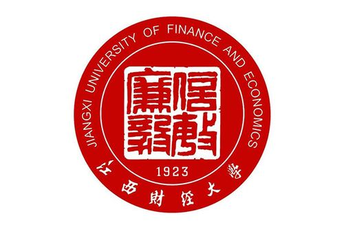

|  | |
| “信敏廉毅”四字采用篆体，并将其作为设计中心，古朴庄重，彰显了学校源远流长的学术底蕴，与富有中国特色的汉代印章元素相结合，表达一种“承诺”与“信用”的含义，体现学校诚信为本、一诺千金的育人理念。 | 江西财经大学（Jiangxi University of Finance and Economics），简称“江财”，位于江西省南昌市，是一所财政部、教育部、江西省人民政府共建，以经济、管理类学科为主，法、工、文、理、艺术等学科协调发展的高等本科院校，入选国家首批卓越法律人才教育培养计划、全国深化创新创业教育改革示范高校、中国政府奖学金来华留学生接收院校、国家大学生文化素质教育基地、国家大学生创新性实验计划、国家级大学生创新创业训练计划，是国家“中西部高校基础能力建设工程”高校、江西省一流学科建设高校 、中俄经济类大学联盟。 |

|
|
| 1993年，蛟桥园图书馆落成,图书馆共设有办公室、采访部、编目部、技术部、信息咨询部、流通部、期刊部、外文部、特藏部。 | 2006年麦庐园校区图文信息中心楼竣工。数字化图书馆建设方面，充分利用移动图书馆、图书馆微信、手机图书馆、智慧校园等平台，构建大数据网络环境下图书馆文献信息资源的交流，提升资源利用能力。s |